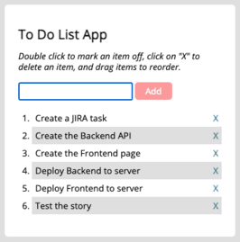

Case Study for To-Do-list App
Overview
To- do list is a app, developed with JavaScript and jQuery that loads data from an external API and enables the viewing of data points in detail.
In this app the user should be able to add a new item to a list of items. The user can also be able to cross out an item from the list of items. The user can delete an item from the list of items. The user can change the order of items in the list of items.
Purpose & Objective
I built this personal project in the context of a CareerFoundry course to master HTML, CSS and JavaScript.
The goal was to create a fully functional, responsive and engaging web app to provide movers with inspiration and details about a variety of movements.
The challenge was to build an API from scratch, set up and connect a database, as well as make use of the most popular frontend JavaScript libraries.
At the same time the project was set up to produce a great portfolio project and get used to common project requirements like user stories and user flows.
Tech Stack / Tools
| Skils | JavaScript, Jquery |
Duration
All in all it took approximately 5 days. For sure a lot more than a project like this should take in “real life”. But since it was a study projects, there were so many things to learn and figure out. I got really absorbed in it an at the end felt ready to call myself a frontend web developer.
Credits
Big thanks goes to my tutor Ahmed Mahfoudh. Without him this would have been way less instructive and fun. And of course I also thank my mentor Stephen Barungi. Thanks also to Marion Sénéchal for great feedback on this case study.
To do list was my first JavaScript and Jquery Project. Traversing from the HTML, CSS to all the way to two great user interfaces was an amazing achievement.
I am quite proud of the product I produced. I would like to continue working on this project for some more time to improve the product.